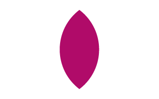

Regoignez le Comité Uni et Liberertaire (C.U.L)
pourquoi faut t'il regoindre le parti C.U.L.
le partit C.U.L et un partit pacifiste qui veut unir le territoir. nous avons publier un manifest où toutes nos idée sont resensser que voici:
A l'heure où un chaos politique règne au sein de notre territoire polychromique, nous voyons que de nombreux groupuscules politiques naissent.
En cette heure trouble où troubles et chaos règnent au sein de notre cher territoire polychromique, nous observons que de nombreux groupuscules naissent et se développent.
Il est alors du devoir de chacun de bien comprendre et assimiler les valeurs qui fondent ces groupuscules et organisations, et plus particulièrement, la nôtre.
Nos valeurs, qui sont celles du C.U.L, sont avant toute chose le bien-être de chacune et chacun en prônant un profond respect de l’individu et de son importance, tout en ayant le pacifisme absolu comme ambition ultime.
La République démocratique et libérale du Dirtybiologistan est une nation pacifiste, et nous embrassons les bras grands-ouverts cette valeur.
Notre volonté, au sein de ce chaos chromatique, est en premier lieu d’unir notre territoire sous le code chromatique #B00B69. En second lieu, suite à un référendum, soumettre le visuel souhaité à l’approbation du pouvoir populaire.
Nous avons nos idées, nos détracteurs, mais surtout, nous avons cette envie commune d’unir le peuple sous nos couleurs et notre dirigeant, fervent défenseur de notre créateur, Léo Grasset.
Si notre parti est élu comme représentant majoritaire, et donc parti au pouvoir, nous promettons une attention constante et totale aux volontés du peuple et le respect à l’intégrité de la nation et à la souveraineté de ses enfants afin que nous vivions, à terme, dans un état qui veut notre bien.